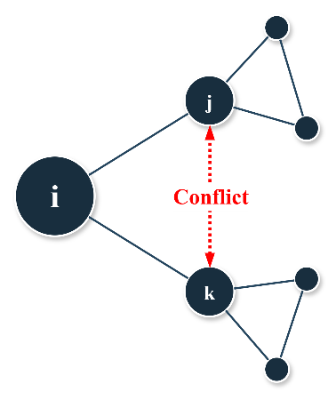

Tatarynowicz & Keil, 2026
Tertius Dolens
Interalter Conflict and Its Negative Impact on Broker Performance
Concept
Tertius dolens, or the suffering third, describes a brokering position in which conflict between alters turns an apparently favorable network position into a liability.
The concept is developed in the 2026 Organization Science paper by Adam Tatarynowicz and Thomas Keil, “Tertius Dolens: Interalter Conflict and Its Negative Impact on Broker Performance.”
Paper
Adam Tatarynowicz and Thomas Keil, 2026. “Tertius Dolens: Interalter Conflict and Its Negative Impact on Broker Performance.” Organization Science. Published online March 24, 2026. https://doi.org/10.1287/orsc.2024.19168
- DOI
- Organization Science page
- Full-text PDF (Open Access, CC BY 4.0)
Summary
The paper develops tertius dolens, or the suffering third, to explain how conflict between a broker’s alters can reduce the broker’s innovation performance. Using longitudinal data on 2,735 publicly listed biopharmaceutical firms, their alliance networks, and U.S. patent disputes, the study shows that interalter conflict constrains knowledge access, raises coordination burdens, and creates reputational strain, while conflict-free structural holes, network status, and multiplex ties can partly mitigate these effects.
Conceptual illustration

Citation
Please cite the published paper:
Tatarynowicz, A., & Keil, T. (2026). “Tertius Dolens: Interalter Conflict and Its Negative Impact on Broker Performance.” Organization Science. https://doi.org/10.1287/orsc.2024.19168
Contact
Adam Tatarynowicz
Nova School of Business and Economics
adam.tatarynowicz@novasbe.pt